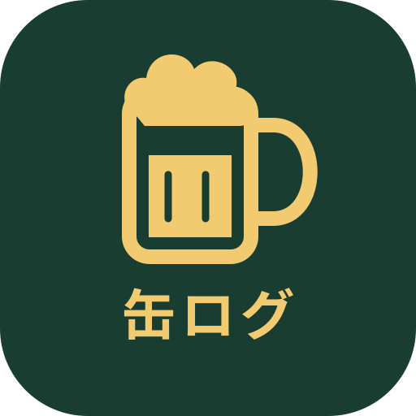

缶ログ
缶のお酒を、かんたん記録。
今日の、ひと缶。
飲酒前いつものお酒を
選びましょう
まずは銘柄を登録してください
今回 0本
スタートで、選んだ銘柄の1本目を記録
いつものお酒
本日の記録
今日のログ
タップして編集前回の書き出し、または最初の記録から30日以上経ちました。
履歴
記録の修正も、価格の入力も、あとから。
購入価格
飲酒セッション
本数だけの記録・本数の修正
商品の分からない日は本数だけ保存できます。詳細記録より少ない本数にはできません。詳細は各ログから編集・削除してください。
集計
飲んだお酒を、少し振り返る。
よく飲んだ銘柄
日別の記録・カレンダー
以前の節約管理
以前の設定と本数から計算する参考値です。実際に消費したお酒の金額とは異なります。
設定
銘柄とデータを、自分のペースで。
登録済みのお酒
自動ではまとめません。残す銘柄を確認して、1組ずつ整理できます。
一覧から削除しても、過去の飲酒記録・金額は残ります。
削除した銘柄
「元に戻す」で再び選べるようになります。
参考単価を変更しても、過去の記録の実際の価格は変わりません。
商品辞書について
分解時間の計算条件
既定値は純アルコール10gにつき約2.5時間（4g/時）。個人の分解能力を測定した値ではありません。
推定方法と限界
各缶の飲み始めに純アルコール量を加え、次の缶までの時間で設定量を差し引きます。飲んでいない時間の分解能力を繰り越しません。終了日時がある場合、推定終了はその時刻より前にはしません。吸収速度・食事・体格等はモデル化していません。同じセッションの詳細記録のみが対象で、本数だけの記録は量を推測しません。
個人差が大きく、運転できる時刻やアルコールの消失を保証しません。参考：厚生労働省 アルコールウォッチ
1日の区切り・以前の節約設定
バックアップと復元
書き出し未記録前回のJSON書き出し、または最初の記録から30日以上経ちました。
記録はこの端末・ブラウザ内に保存します。JSONは復元用、CSVは表計算用です。端末の外にも保管してください。
iPhoneでの保存先を確認する
ダウンロードや共有の画面で「ファイルに保存」を選び、「ファイル」アプリの保存先にJSONがあるか確認してください。別の端末へ移すときは、このJSONを新しい端末で読み込みます。CSVは復元には使えません。
JSONを貼り付けて読み込む
困ったときの復旧用
通常は使いません。記録がおかしくなったときに、直前の状態や保存中の原文を書き出せます。
旧名称の記録・旧保存キーは削除しません。
アプリの更新
確認中まだ更新を確認していません。
保存済みの記録はそのまま残ります。入力中の内容は保存してから更新してください。